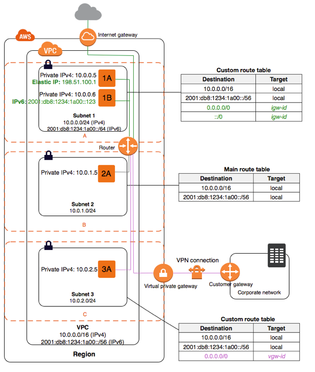

A VPC is basically a virtually isolated network in the cloud, which resembles a traditional network in a corporate datacenter. Every user can create VPC in their own AWS account. You can create an AWS account by following this link here (Prerequisite)
A virtual private cloud (VPC) is a virtual network dedicated to your AWS account. It is logically isolated from other virtual networks in the AWS Cloud. You can launch your AWS resources, such as Amazon EC2 instances, into your VPC.
Let us talk about subnets in VPC! A subnet can be defined as a part of the VPC CIDR range where you can use the IP addresses to allocate to resources. Even though a VPC spans across the entire region, every subnet can only be associated with only one Availability Zone. Availability Zones are distinct locations that are engineered to be isolated from failures in other Availability Zones. By launching instances in separate Availability Zones, you can protect your applications from the failure of a single location. In order to uniquely identify a subnet, there is a unique id(provided by AWS) associated with the subnet.
There are two types of subnets
The following diagram shows a VPC that has been configured with subnets in multiple Availability Zones. 1A, 1B, 2A, and 3A are instances in your VPC. An IPv6 CIDR block is associated with the VPC, and an IPv6 CIDR block is associated with subnet 1. An internet gateway enables communication over the internet, and a virtual private network (VPN) connection enables communication with your corporate network.

For choosing a VPC and creating its subnets, you need to select the range of private IP addresses in the VPC and its subnets. This IP range will be further allocated to all the resources inside this VPC, the range is called CIDR.
Consider a CIDR IPv4 range 10.0.0.0/16, a VPC can have a range of /16 to /28 for the netmask(specification of the number of address bits available in a network).
Here /16 will allocate 65536 IPv4 addresses in VPC using the calculation given below:
As IPv4 represents 32 bit addressing, 32-16(n)= 16 2^16 (2 raised to power 16) = 65536.
In any given VPC, 5 IP addresses are reserved by AWS. In the above VPC with CIDR 10.0.0.0/16, the following are reserved by AWS.
Amazon VPC supports IPv4 and IPv6 addressing, and has different CIDR block size limits for each. By default, all VPCs and subnets must have IPv4 CIDR blocks—you can't change this behavior. You can optionally associate an IPv6 CIDR block with your VPC.
Think of your office as a multi-story building Each floor has multiple suites Each department like HR, Payroll can sit in one floor (or) multiple floors Every suite has few rooms Each room has couple of desk where employees work
Region: Think of the office building as equal to a Region. Just like how AWS Regions encompass other components, the office building is an outer layer that contains many things.
Availability Zone: Think of each floor like an Availability Zone. Just like a region can have more than one availability zone, our building can have more than one floor.
VPC: Each department in the office is like a VPC. VPCs span across availability zones in a region, and each department in your office can span across different floors.
Subnet: Each Suite represents a subnet. Like how each subnet resides ONLY within an availability zone, each suite will be part of the floor and it won’t span across floors.
IP Address: Each desk within a suite represents an IP address.
When companies assign a desk to employee, they first look at: Which department this employee belongs to Then identifies which floors the department spans across Then identifies which suites have open desks Assigns one of the open desks to the employee
Likewise, when anyone launch AWS EC2 instance:
We need to pick which VPC this instance should be deployed to Then we pick which availability zone (if not, default availability zone) Then we pick the subnet (if not default subnet) Then an IP from this subnet gets assigned to our EC2 instance (as private IP)